Continuing from the example of our previous blog post on House of Cards, we’ll see today how one can customize the elements of diagrams by using pictures.
In a Sirius based editor, the style of each diagram element can be customized. This customization can be applied from:
Appearance tab of the property view: 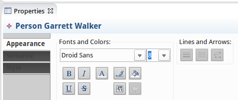
Diagram menu: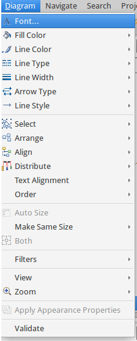
Format: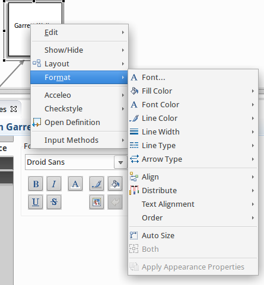
The elements you can customize are:
If we set a workspace image on the Influence diagram resulting from the tree layout blog post, we are able to see Frank Underwood’s face instead of a simple white square.
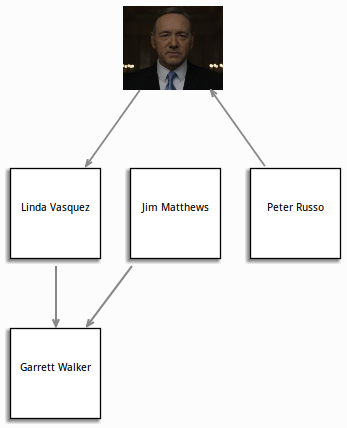
These customizations can be reset using:
Reset style customization button available in the Appearance tab of the property view :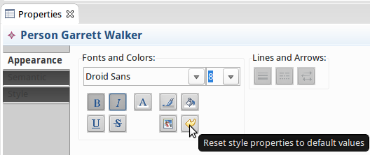
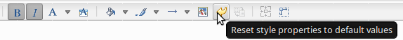
Thanks to this feature each user can customize existing diagrams in any Sirius based modeler. The problem with this solution is that if you create another diagram, the default style will be applied, and we would no longer see Frank’s beautiful face. This method is only useful to customize a specific instance of a diagram.
If instead of having customization specific to a given instance, we would like all diagrams of a certain type, what we need to do is to provide the image during the diagram specification phase.
In order to get the image on every new diagram, we need to provide it at the diagram specification phase. To do so, after reopening the houseofcards.odesign, we need to update the Influence diagram description to use a workspace image in a conditional style to represent Frank.
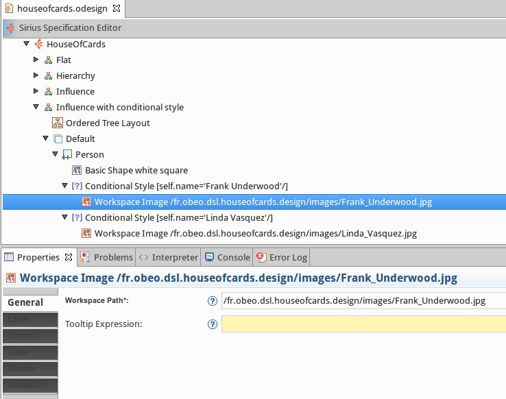
From now on, everytime an Influence diagram is created, Frank’s and Linda’s faces will automatically be associated to the relevant diagram elements.
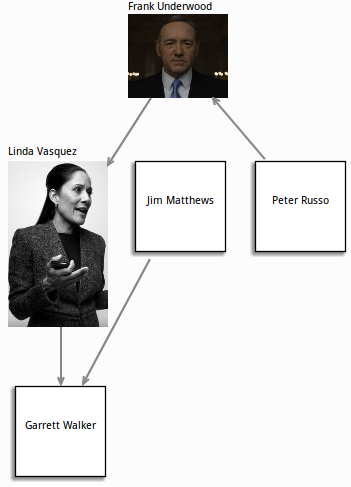
What is problematic with this solution is that we need to create a conditional style for each character. As there are around 50 different characters in the House of Cards series, it is not a very practical solution.
Fortunately, Sirius provides another way to achieve that. We want to provide all the images in a specific folder and have Sirius select the right one according to the picture’s name. This can easily be done by using the style customizations.
We modify our mapping to specify a workspace image style.
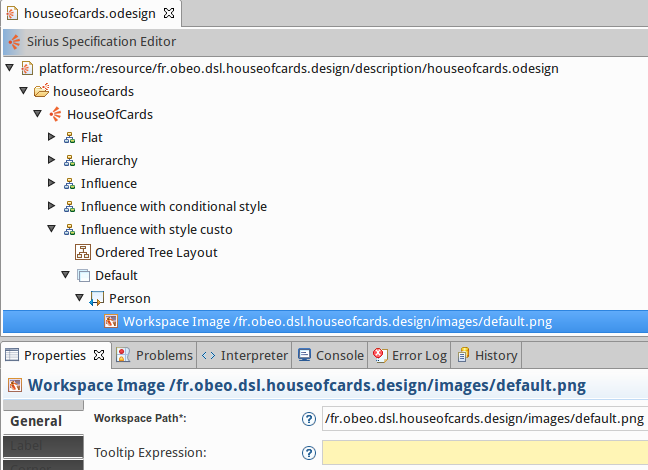
We provide a new style customization:
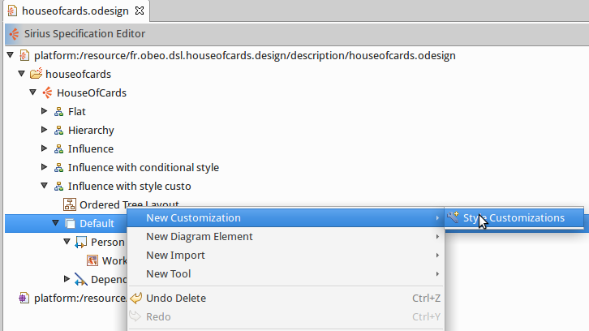
And a new property customization by expression:
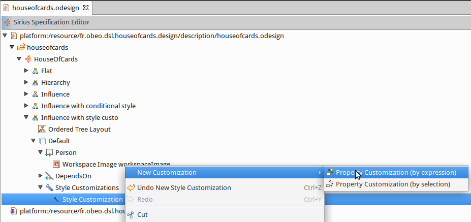
All the pictures are stored in an images folder.
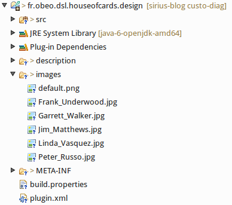
Then we specify that the style to customize is the workspace image previously defined.
This style customization must be applied on PersonWorkspaceImage and we want to customize the workspacePath property:
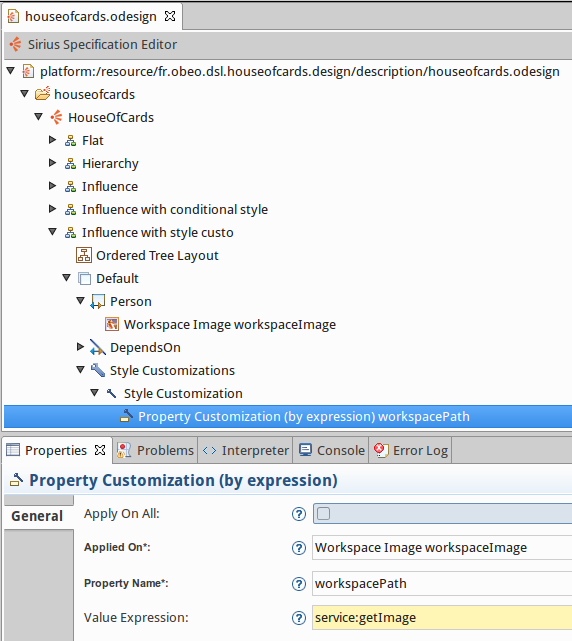
To retrieve the value of the workspacePath, we call a Java service getImage which returns the image path from the person name:
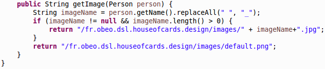
Finally, when we reopen our example, we get a shinier diagram this time with everybody associated to his picture.
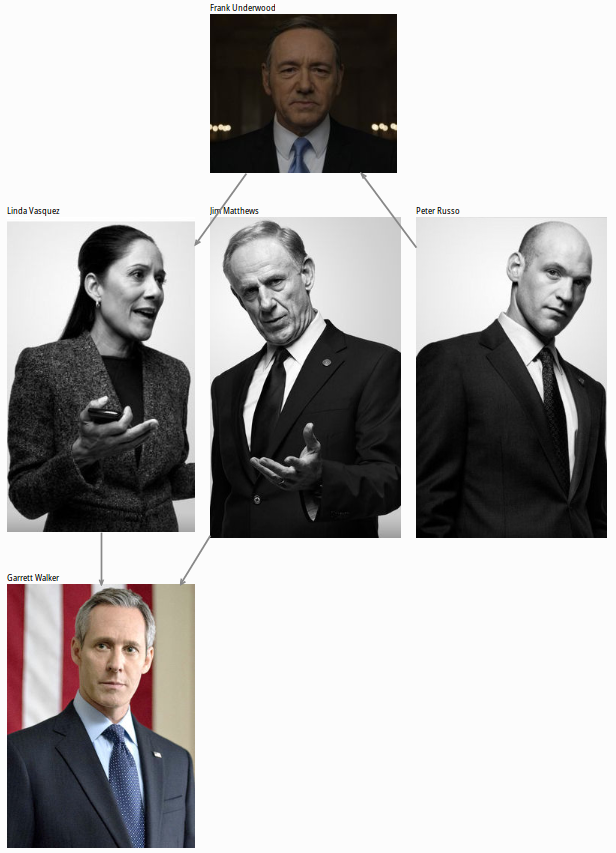
And now if I update the name of a character, I get automatically the associated picture. John Doe is represented by the default image and we see Zoe’s lovely face.
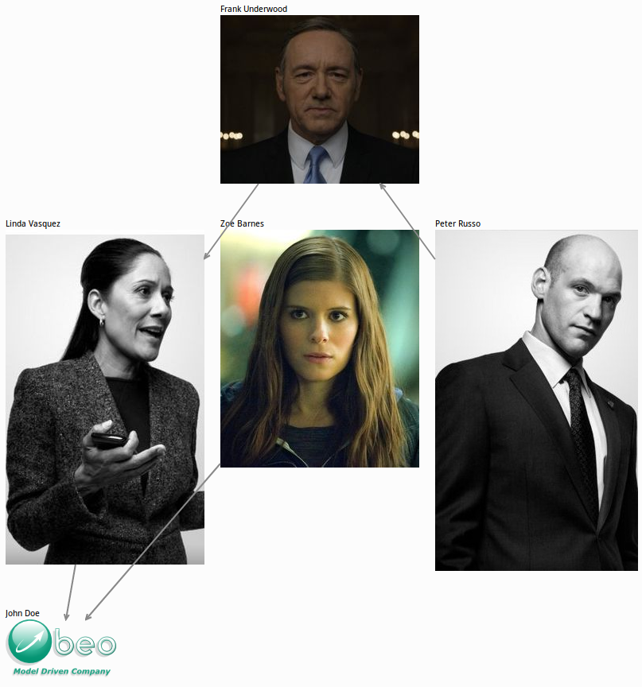
With the next Sirius 3.0 version, if you use images with a transparent background, the edges will follow the image.